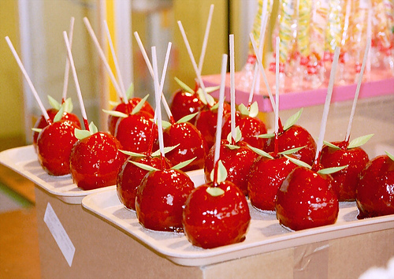

Friday, May the 4th, 2012
back to: title, date or indexes
This week in my cupboard at The Dabbler, a memoir of the toffee apple wrappers of my childhood. Is it a true memory, or have I just made it up? And will you ever know? These are by no means important questions, and yet you may find them niggling away at you as the day goes on, and the night, and the following day, and the following night, until you are driven to distraction, desperate to know the answers once and for all, yet remaining forever in doubt.
